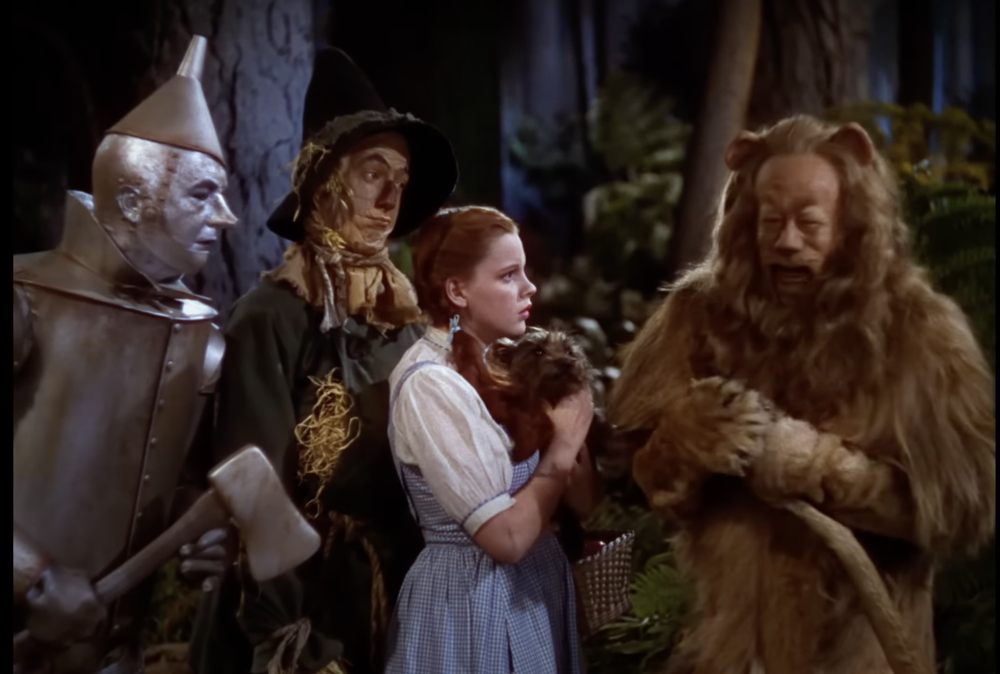
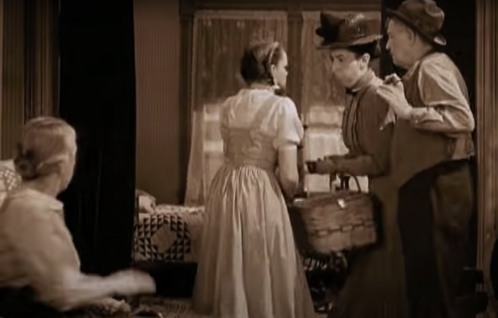
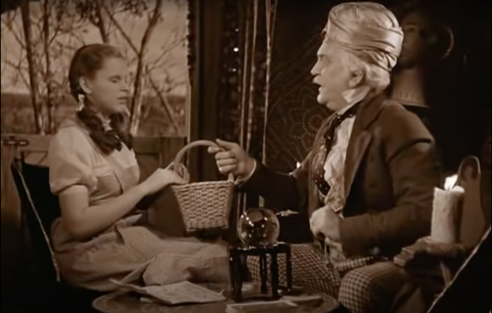
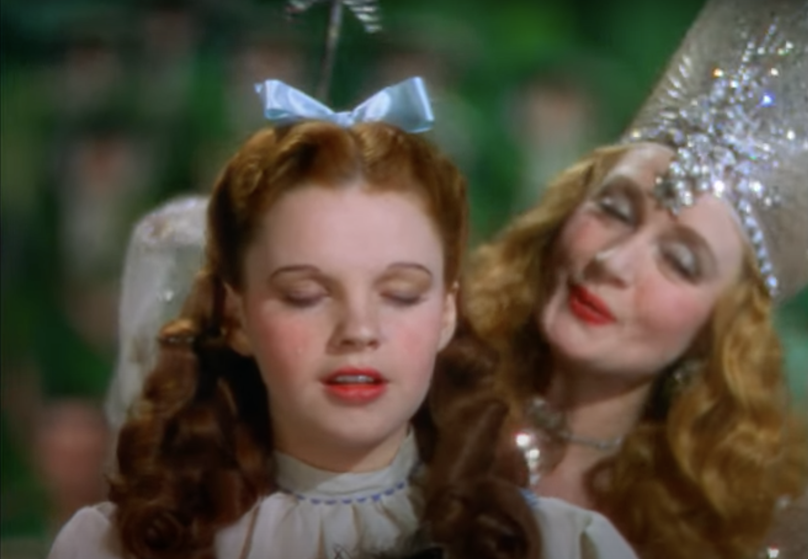
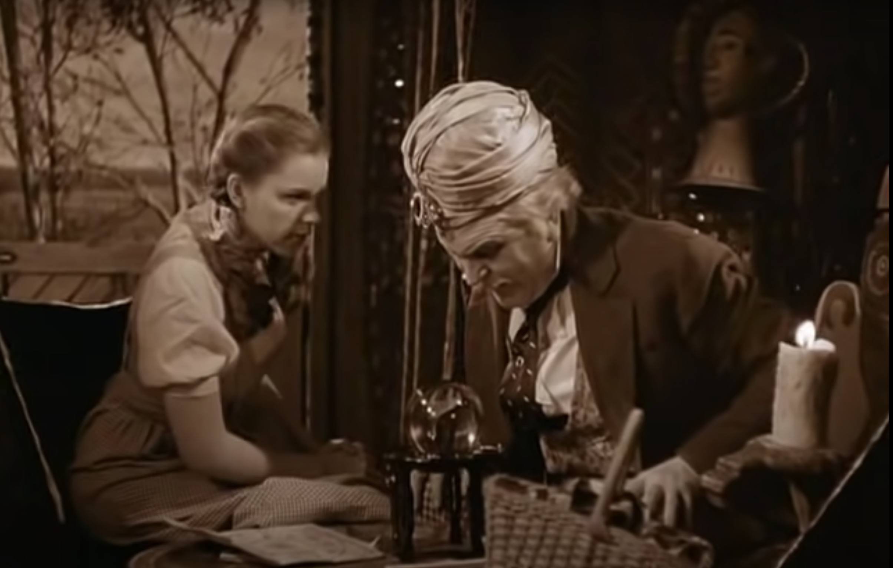
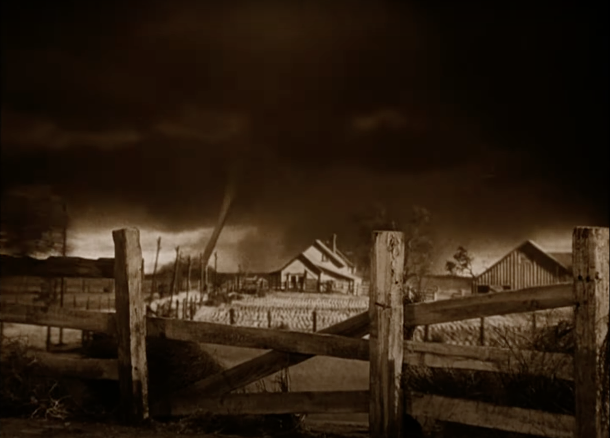
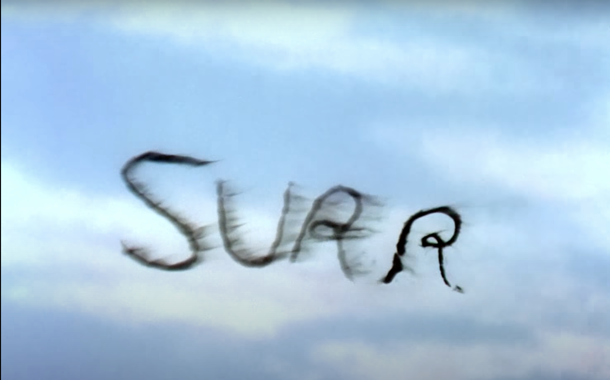
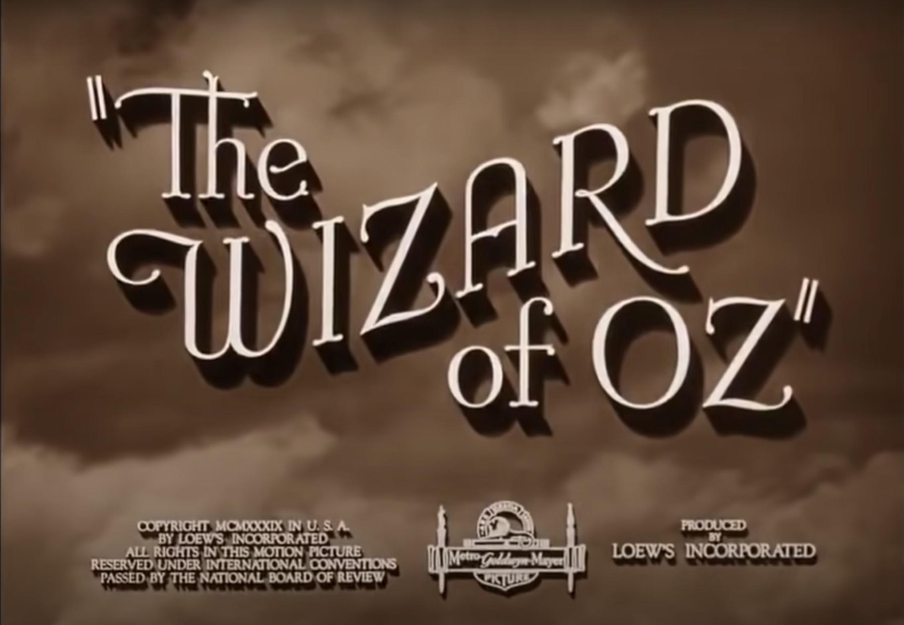
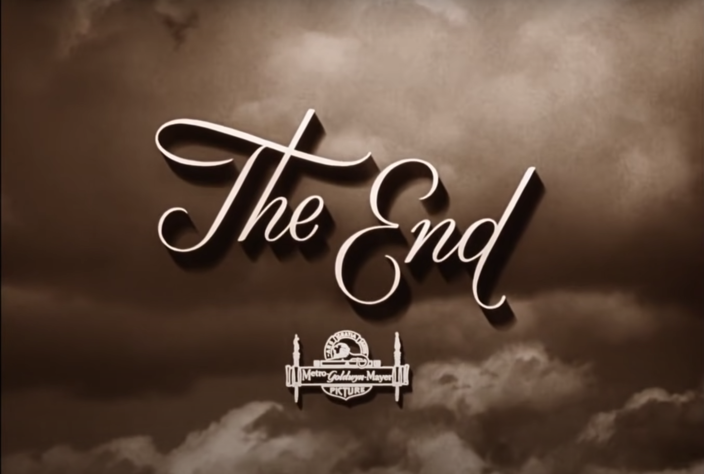

scene 1-1:Scene One-The Kansas Prairie > Scene 8-1-Scarecrow


scene 1-2:The Kansas Prairie > scene 12-The Lion


scene 1-3:Scene One-The Kansas Prairie > scene 8-2-Scarecrow


scene 3-1-Miss Gultch takes Toto > scene 7–Flying Monkeys


scene 3-2-Miss Gultch takes Toto > scene 16-The Witch’s Castle


scene 4-1–Gypsy Caravan > scene 6-Munchkin Land


scene 4-2–Gypsy Caravan > scene 20-Witch’s Chamber


scene 5-2-The Twister > scne 22-Wizards Camber


scene 5-1-The Twister > scene 28–Kansas


intro > outro